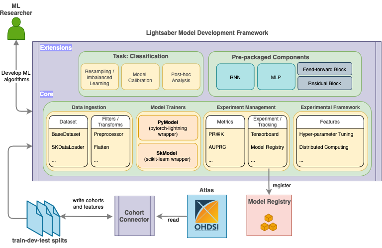

Getting Started

Lightsaber contains four key modules (comprising the core of Lightsaber) that aims to promote reuse and standardization of DPM model training workflow as below:
- Data ingestion modules to support standardized methods of ingesting and transforming raw data (containing extracted features and target values).
- Model Trainers to support standardized training of DPM models by adopting the best practices as default
-
Experiment Management to ensure repeatable experimentation and standardized reporting via:
metricsto calculate DPM problem specific model evaluation, and- in-built Model tracking and support for post-hoc model evaluation.
-
Experimental Framework exposing user friendly state-of-the art tools for hyper-parameter tunings and distributed computing
In addition, Lightsaber comes with task specific defaults and utilities (e.g. post-hoc calibration for classification tasks and resampling for imbalanced learning) and pre-packaged models/components with sane defaults for DPM.
Lightsaber supports both scikit-learn and pytorch compliant models.
This guide details the first 3 core components and describes the recommended workflow:
Data Ingestion Modules
To develop DPM models, once the data has been curated (via cohort definition and feature extraction), Lightsaber provides data ingestion modules to consume curated data across splits in a repeatable and standard manner. For this process, the primary data ingestion is provided by BaseDataset class
It accepts the following parameters
Parameters
----------
tgt_file:
target file path
feat_file:
feature file path
idx_col: str or List[str]
index columns in the data. present in both `tgt_file` and `feat_file`
tgt_col: str or List[str]
target column present in `tgt_file`
feat_columns:
feature columns to select from. either a single regex or list of columns (partial regex that matches the complete column name is ok. e.g. `CCS` would only match `CCS` whereas `CCS.*` will match `CCS_XYZ` and `CCS`)
Default: `None` -> implies all columns
time_order_col:
column(s) that signify the time ordering for a single example.
Default: `None` -> implies no columns
category_map:
dictionary of column maps
transform: single callable or list/tuple of callables
how to transform data. if list of callables provided eg `[f, g]`, `g(f(x))` used
Default: drop `lightsaber.constants::DEFAULT_DROP_COLS` and fillna
filter: single callable or list/tuple of callables
how to filter data. if list of callables provided eg `[f, g]`, `g(f(x))` used
Default: no operation
device: str
valid pytorch device. `cpu` or `gpu`
First, tgt_file and feat_file parameters lets a user specify the csv-like curated data to setup the supervised training
setting (setting tgt_file to None lets one use BaseDatset in an inference mode).
For a specific experiment, a user may want to use only a selected number of features.
This can be achieved by using the feat_columns parameter that accepts either a list of feature columns or a regular expression specifying the sub-list of columns.
For added convenience, It can also support a hybrid approach such as:
feat_columns = ['featA', 'b_feat*']
In many DPM use cases, extracted data can also contain a number of categorical features. Often times domain information about the possible categories (e.g. age groups) are available. Using the category_map parameter, a user can specify the categorical features and their expected categories - BaseDataset internally handles and converts such features (e.g. by one-hot encoding the features) for downstream analysis.
BaseDataset also assumes and supports temporal data natively. Users need to specify the index (idx_col) and target (tgt_col) columns - If idx_col is a list, it assumes that the second value indicates the temporal order and data is sorted according to it. However, users can also specify an additional time_order_col to specify a different sort order for their problem or for custom pre-processing (e.g. using filters and transforms). Specifically for pytorch models, Lightsaber also provides custom collate function to handle samples with unequal temporal length.
Finally, on the same extracted cohort and features, users can conduct different experiments by using different pre-processing techniques. This is handled by the concept of filters and transforms.
Filters and Transforms
BaseDataset supports a set of composable functions called filters and transforms that can be used to transform the input data. While both lets a user run pre-processing steps on the data, filters are applied during once after the data is loaded and acts on both features and target values. transform on the other hand works only on features and is used every time data for a single sample is accessed. (in most cases, users may only need to use filters).
Filters accepts as arguments (data, target) and other keyword functions and always returns (data, target).
An example filter to flatten a temporal data using max as the aggregation function can be defined as follows:
@functoolz.curry
def filter_flatten(data, target, method='max'):
data = (data.groupby(data.index.names)
.agg(method))
log.debug("Done in flatten")
return data, target
While such filters can be user-defined and specified at run-time,
Lightsaber also comes pre-packaged with a set of filters covering some common use cases:
filter_fillna: fillNAfilter_preprocessor: to chain anyscikit-learn(compliant) pre-processor in the correct mannerfilter_flatten_filled_drop_cols: to flatten temporal data, fillNA, and drop extra columnsfilt_get_last_index: to get the last time point from each example for a temporal dataset (e.g. useful for trainingMed2Vecmodels)
Transform are functions that are applied at run-time to feature extracts while returning the data for a single
example. It accepts as arguments (data) and other keywords. It always returns (data).
Lightsaber comes pre-packaged with a set of transforms including flattening and dropping NA at runtime.
transforms are generally discouraged as these are applied at run time and can slow down data fetching.
In general, if it is possible to load the entire data in memory use filters - else use transforms.
Simplified API for scikit-learn
While BaseDataset is a general purpose data ingestion module, Lightsaber
provides a higher level api to access data in a format more accessible to people familiar with scikit-learn.
It is provided by SKDataLoader class:
It accepts the following parameters:
Parameters
----------
tgt_file:
target file path
feat_file:
feature file path
idx_col:
columns to specify the unique examples from the feature and target set
tgt_col:
columns to specify the target column from the target set.
feat_columns:
feature columns to select from. either list of columns (partials columns using `*` allowed) or a single regex
Default: `None` -> implies all columns
time_order_col:
column(s) that signify the time ordering for a single example.
Default: `None` -> implies no columns
category_map:
dictionary of column maps
fill_value:
pandas compatible function or value to fill missing data
flatten:
Functions to aggregate and flatten temporal data
cols_to_drop:
list of columns to drop
preprocessor:
any scikit-learn pre-processor that needs to be used agains the data
The parameters common to BaseDatset serve the same purpose here.
Additionally, fill_value, flatten, and cols_to_drop provide quick ways to impute the data, flatten temporal data, and drop redundant columns (e.g. required by filters but not required during modeling) - these can take simple str values as accepted by pandas api.
A typical example usage of this class to ingest a temporal data, flatten it using max aggregation, and re-scale using StandardScalar can be found in the examples.
Model Training
Model Training is supported for both pytorch and scikit-learn models. In general, task specific model trainers are available for both types of model that accepts the corresponding data ingestion modules and follows the following common steps:
Wrapping model definitions with task specific trainers
In this step, models defined in pytorch/scikit-learn are wrapped in a task specific trainers that injects hooks for model training and tracking codes.
For classification, it injects hooks such as
(a) common training steps for classification, (b) post-hoc model calibration, and (b) tuning codes.
The wrapper classes are as follows:
pytorch wrappers: provided by PyModel.
While the full parameter list can be found in the API documentation, two of the most important attributes while wrapping the model are:
Parameters
----------
hparams: Namespace
hyper-paramters for base model
model:
base pytorch model defining the model logic. model forward should output logit for classfication and accept
a single positional tensor (`x`) for input data and keyword tensors for `length` atleast.
Optinally can provide `hidden` keyword argument for sequential models to ingest past hidden state.
In general, the base model contains the logic for defining the network architecture (e.g. MLP) and can optionally provide functions for:
- defining custom function to predict the probability from logit via
predict_proba(Default:PyModelusesout_transformon logit output) - checkpoint manipulation via
on_load_checkpoint
In addition, PyModel parses the hyper-parameters hparams to provide:
- regularization of the base model parameters (via
apply_regularization) ifhparams.l1_regorhparams.l2_reg` is present, - calibration via
set_temperature, and - freeze n layers via
freeze_except_last_layer
Finally, it provides predict_patient to conduct inference on a single patient data
sklearn wrappers: provded by SKModel.
Similar to pytorch it accepts base_model as a paramters which must be a scikit-learn compatible classifier. Some of the added utilites injected by SKModel are:
fitcalibrate: to provide post fitting calibration from calibration datasettune: run hyper-parameter training usingGridSearchCV
Running model training
Once the base models are wrapped, Lightsaber provides utilities to run model training with associated model tracking via Mlflow.
It is provided by:
Both of these accept the following parameters
mlflow_conf: dict
mlflow configuration e,g, MLFLOW_URI
wrapped_model: SKModel
wrapped SKModel
kwargs: dict of dicts, optional
can contain `artifacts` to log with models, `model_path` to specify model output path, and remianing used as experiment tags
where wrapped_model is the appropriate wrapped model from PyModel/SKModel and the Mlflow tracker to log to can be provided at run time (e,g, the MLFLOW_URI, default file:./mlruns).
In addition, pytorch training accepts a pytorch_lightning.Trainer object that
can be configured at run-time to train the models. On the ohter hand scikit-learn trainer also accepts train and test dataloaders.
Both of these return a consistent set of values including the run_id associated with the run in Mlflow, relevant classification metrics, and predicted values for test and validation folds.
Other improtant functions
lightsaber.trainers.sk_trainer.model_init: helper function to abstract standard model training pre-amble for training
Model Registration and Inference
Once a model is trained and run_id is available,
to register a model Lightsaber follows the subsequent steps:
- a saved model (along with hyper-params and weights) is retrieved using run_id
- model is initialized using the weights
- model is logged to Mlflow under registered model name
These functions are provided by:
- for
pytorch: model registration utility - for
scikit-learn: model registration utility
Lightsaber also natively supports conducting inferences on new patients using the registered model. The key steps involve:
- loading the registerd model from Mlflow
- Ingest the new test data using the appropriate data ingestion (e.g. BaseDataset for
pytorch) in inference mode (settingtgt_filetoNone) - Use the
predict_patientfrom the appropriate model wrapper (e.g. [PyModel][lightsaber.trainers.pt_trainer.PyModel ]) method to generate inference for the patient of intereset
Interested readers can take a look at the following examples:
- for
scikit-learn: Example Notebook with HistGBT - for
pytorch: Example Notebook with LSTM